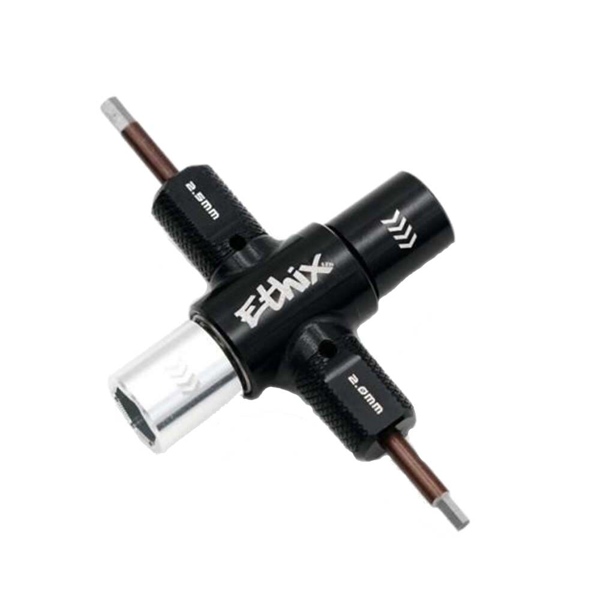

Zusatzausrüstung
Bit-Set
Du wirst vor allem viele Schrauben mit kleinem Innensechskant haben. Wenn du hier noch nichts hast, leg dir ein kleines Sortiment an entsprechenden Schraubenziehern oder Bits zu. Insbesondere die Hex-Bits für 1.5, 2.0, 2.5 und 3.0 sind hier relevant.
Ein universales Set, dass dir sicher auch außerhalb von FPV gute Dienste leisten wird, ist z.B. das iFixit "Mako Precision Bit Set".
Prop-Tool
Propeller werden meistens mit einer M5-Mutter befestigt. Das willst du nicht mit einem normalen Schraubenschlüssel fest ziehen. Eine Ratsche, ein Ringratschen-Schlüssel oder ein sogenanntes Prop-Tool helfen ungemein.
| Prop-Tool | Ringratsche |
|---|---|
|  |  |
Löten
Zum Bauen und Reparieren deines Quads wirst du einen Lötkolben benötigen. Der Lötkolben sollte temperaturgesteuert sein. Nimm bitte nicht einfach den nächstbilligen Lötkolben aus dem Baumarkt, diese haben meistens keine Temperatursteuerung sondern geben einfach Vollgas.
Versuche bleihaltiges Lötzinn zu bekommen. Damit lötet es sich leichter als mit bleifreiem. Dazu sollte das Lötzinn Flussmittel enthalten.
Gute kompakte Lötkolben sind z.B.
- TS100
- Sequre Mini SQ-001
- Sequre Mini D60
Diese kannst du unter anderem auch mit einem LiPo-Akku betreiben um unterwegs zu löten. Alternativ haben die Netzteile, die dir hier im Guide empfohlen werden auch eine DC-Power-Funktion, mit der die Lötkolben betrieben werden können.
Anm. Puffi: Wenn du zu viel Angst vorm Löten hast hol dir ne Trainingsplatine und übe!
Du musst keine SMD-Komponenten löten können, aber mit Lötflächen im Bereich um 4 mm² solltest du klarkommen, ohne dass du eine unförmige Spur aus Lötzinn und ein Masaker von Komponenten quer über die Platine verteilt hinterlässt.
| Diatone Übungsplatine | MuteFPV Übungsplatine |
|---|---|
 |  |
Rucksack
Es gibt spezielle Rucksäcke für Copter. Herausragenstes Merkmal sind die Spannriehmen, mit denen du Quads außen am Rucksack befestigen kannst. Ansonsten tut es auch jeder Rucksack. Nützlich ist, wenn du den Rucksack fest unterteilen kannst in Fächer für Akkus, die FPV-Brille, Funke, ... Das findest du häufig als Eigenschaft bei jedem X-beliebigen Foto-Rucksack.